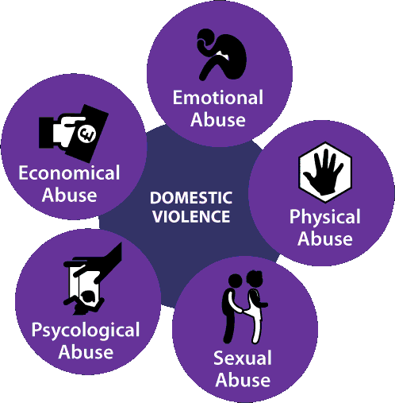

Cos'è la violenza?
La violenza è una delle problematiche più gravi che affligge la società contemporanea, ed è un fenomeno che ha radici profonde in molteplici ambiti, dai conflitti familiari alle guerre internazionali. La violenza si può manifestare in vari modi: fisica, psicologica, verbale, economica, e anche sessuale. La comprensione delle cause e delle conseguenze di questa piaga è fondamentale per sviluppare strategie efficaci di prevenzione e supporto alle vittime.

Le cause della Violenza
Le ragioni che scatenano la violenza sono molteplici. Talvolta sono legate a problemi psicologici, come la rabbia o l’ansia, o a disagi economici e sociali che portano le persone a esprimere il loro malessere attraverso comportamenti aggressivi. In altri casi, fattori culturali e familiari giocano un ruolo determinante. La violenza può essere anche una risposta a disuguaglianze o discriminazioni.

Le Conseguenze della violenza
Le ragioni che scatenano la violenza sono molteplici. Talvolta sono legate a problemi psicologici, come la rabbia o l’ansia, o a disagi economici e sociali che portano le persone a esprimere il loro malessere attraverso comportamenti aggressivi. In altri casi, fattori culturali e familiari giocano un ruolo determinante. La violenza può essere anche una risposta a disuguaglianze o discriminazioni.
Le Forme di Violenza
Ecco alcuni modi per combattere la violenza:
Violenza fisica Impara a riconoscere i segnali di violenza e a prevenirla.
Violenza psicologica: Sensibilizza gli altri sulla violenza e sui suoi effetti.
Violenza verbale: Prendi azione per combattere la violenza nella tua comunità, denunciando abusi e sostenendo le vittime.
Violenza economica: Promuovi l'uguaglianza economica e l'accesso alle risorse per tutti.
Violenza sessuale: Sostieni le organizzazioni che lottano contro la violenza sessuale e offri supporto alle vittime.

Come Contrastare la Violenza
La lotta alla violenza richiede un impegno collettivo da parte di tutti. Le politiche di prevenzione, il supporto alle vittime, l'educazione al rispetto e la promozione della parità di genere sono solo alcune delle misure necessarie per combattere questo fenomeno. La sensibilizzazione sociale e la denuncia delle situazioni violente sono passi fondamentali per interrompere il ciclo della violenza.
Testa le tue Conoscenze
Per testare la tua conoscenza sulla violenza e su come combatterla, clicca sul pulsante qui sotto per accedere al quiz.
Inizia il QuizSe desideri tornare alla pagina precedente, clicca sul link qui sotto.
Vai alla prossima pagina O Torna alla Home